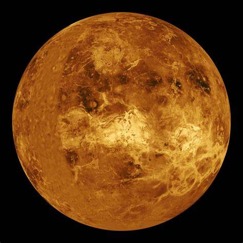

Vénus est la deuxième planète du système solaire. Elle est souvent appelée "sœur jumelle" de la Terre en raison de leur taille similaire.
Cependant, son atmosphère est extrêmement dense et riche en dioxyde de carbone, ce qui provoque des températures de surface très élevées.
